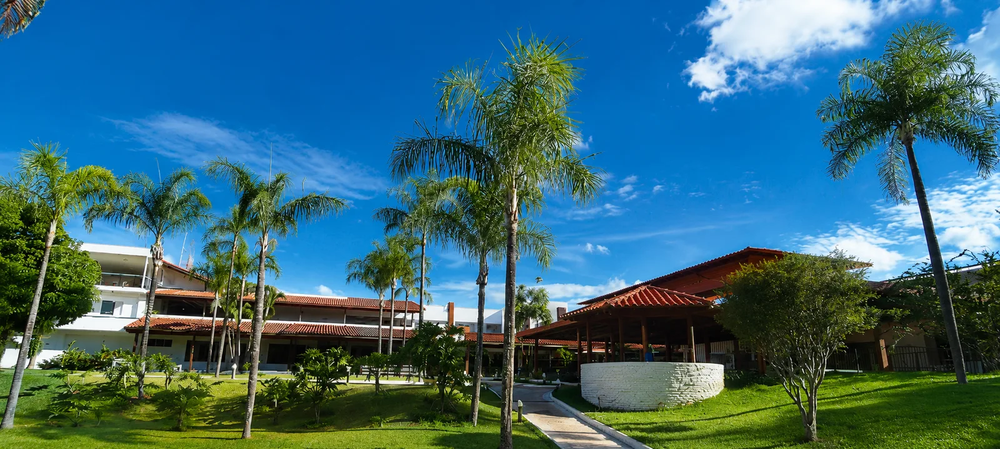

A Vila cuida com carinho e respeito de cada pessoa acolhida
Fundada em 2009, a Vila do Pequenino Jesus é uma instituição que acolhe e cuida de pessoas com deficiência física e intelectual no Distrito Federal. Em 2024 completou 15 anos de história.
Maria Amélia é apoiadora ativa da Vila e acredita que cuidar dos mais vulneráveis é o verdadeiro sentido da ação política.
Todas as terças-feiras, Maria Amélia abre as portas da sua fábrica para receber os acolhidos da Vila em um café da manhã especial, um momento simples, mas cheio de significado, que fortalece laços, leva acolhimento e reafirma a importância de olhar para o próximo com amor e respeito.
Fundada em 2009, firme no compromisso com as pessoas com deficiência do DF
Maria Amélia recebe os acolhidos na fábrica toda semana
